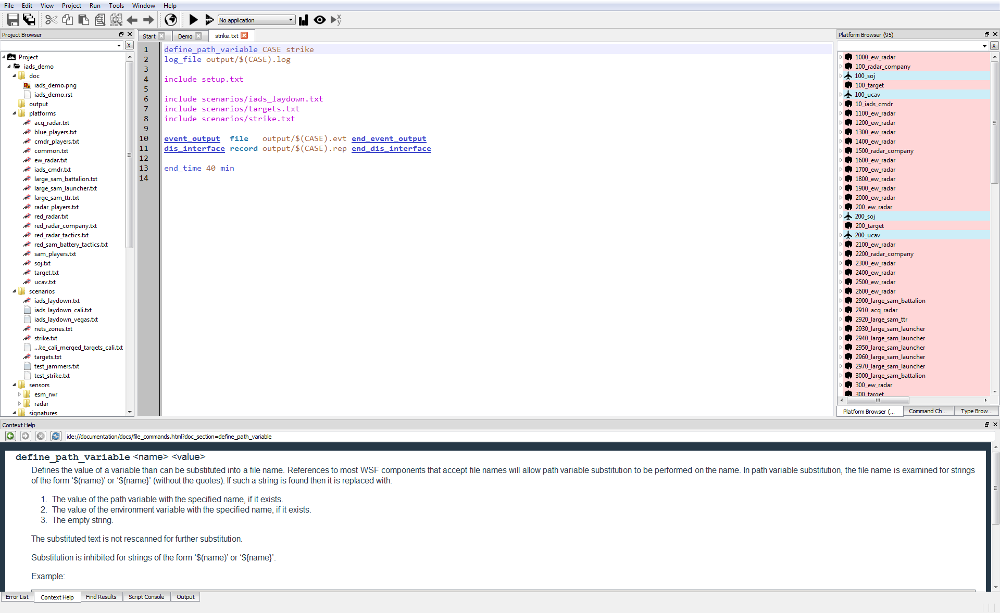
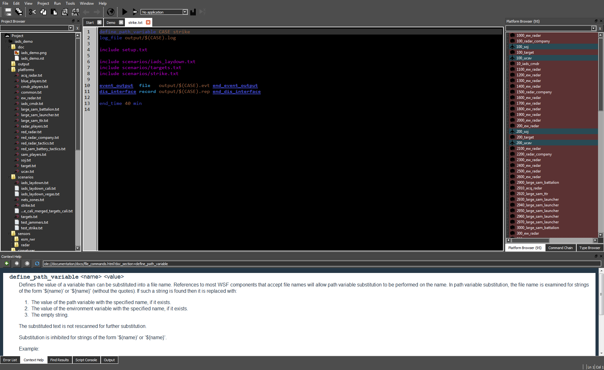

Wizard v2.0.0 - 25 March 2016¶
New Features¶
Added the Demo Browser - Wizard capability.
Added the Wizard_DIS_Interface_Setup plugin.
Added new high-contrast, dark color theme.
Added capability to dynamically discover, view, and select predefined color themes (cascading style sheets) via the Wizard_Options dialog.
Added functionality to automatically re-style open editor tabs/windows upon change in theme or font/color options.
Added functionality to dynamically discover and pre-populate the Simulation Manager - Wizard upon first execution.
Integrated Command Documentation - Wizard with new Sphinx documentation system/paradigm, including duplication of look and feel.
Notes¶
Significant refactor/overhaul of Wizard menus and Main Window - Wizard Toolbars, including correction of issues with context-based feature enabling/disabling.
Migrated many core features (including Wizard_Map_Window, *Wizard_Multi_Run*, etc.) into stand-alone plugins to ease development activities.
Bugs¶
Fixed the ability to comment a selection with the shift+3 (#) key combination.
Fixed the Map Window->Platform Properties->Name field always displaying ” - multiple selection - ” when an entity is selected. When a platform is selected, both the entity and its attachments are selected which was triggering a multi-select indication.
Disabled the ability to open the Map Window without a project loaded. Interaction with the Map Window without a project loaded was causing Wizard to crash.
Fixed mis-aligned line numbering on the Find Results - Wizard dialog upon editing of matching file.
Fixed mis-aligned breakpoint locations in the Script Debugger - Wizard upon editing of file (Mantis Bug 29).
Fixed incorrect population of “Externals Items” on the Project Browser - Wizard and file path resolution when using the file_path command (Mantis Bug 76).
Corrected an issue with the Linux installation of the SigView executable not having correct user permissions. The CMAKE for Wizard *SigView* plug-in has been updated.
Corrected an issue with the hardcoded background color (light grey) and the default text color (white) in Wizard dark made the auto pop-up intellisense textboxes unreadable. Changed the default text color to black so that it’s readable.
Corrected issues with new functionality to dynamically discover and pre-populate the Simulation Manager - Wizard upon first execution. Changes include additional Command Line Arguments.
New Feature Screen-shots¶
Demo Page |
|---|

|
Light Color Theme (Existing, Default) |
Dark Color Theme (New) |
|---|---|
|  |  |
{kind=link}
{kind=link}